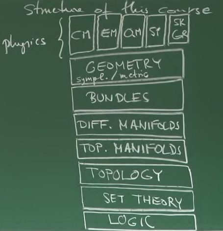
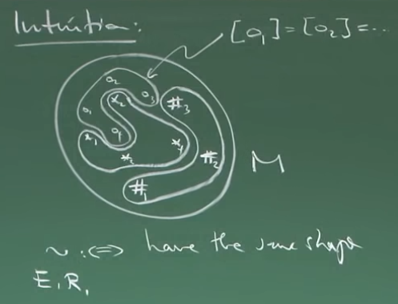

Notes from this lecture series by Frederic Schuller, building the mathematical background for Classical Mechanics, Statistical Mechanics, SR, GR, EM & QM.
Introduction — Logic of Propositions and Predicates
Structure of the Course

I.I: Propositional Logic
Chapter I: Axiomatic Set Theory
A proposition is a variable that can be true or false. No others. We can create new propositions from given ones using logical operators.
a) Unary Operators
| P | Not P | Identity | Tautology | Contradiction |
|---|---|---|---|---|
| T | F | T | T | F |
| F | T | F | T | F |
I.IV The \(\epsilon\)-relation
Set Theory is built on the postulate that there is a fundamental relation1 called \(\epsilon\). There will not be a definition in the strict sense of what \(\epsilon\) or what a set is. Instead, there will be 9 axioms that speak of \(\epsilon\) and of sets.
Overview of Axioms
Using the \(\epsilon\)-relation we can immediately define:
\[x \notin y \iff \neg(x \in y)\]
\[x\subseteq y \iff \forall a: (a \in x \implies a \in y)\]
\[x = y \iff (x \subseteq y)\ \land\ (y \subseteq x)\]

I.V Zermelo-Fraenkel Axioms of Set Theory
Axiom on the \(\epsilon\)-relation (E)
\(x \in y\) is a proposition (either true or false) if and only if \(x\) and \(y\) are both sets.
Counterexample (Russell’s Paradox and naive Set Theory):
Assume there is a set \(u\) of all sets that do not contain themselves:
\[\exists u: \forall z: (z \in u \iff z \notin z)\]
Is \(u\) a set? If so, one must decide whether \(u \in u\) is true or false2.
Assume \(u \in u\) is true: then by definition \(u \notin u\), which is contradictory.
Assume \(u \in u\) is false: \(\iff u \in u\), also a contradiction.
We must conclude therefore that \(u\) is not a set.
\(x \in y\) is either true or false, formally:
\[\forall x: \forall y: (x \in y) \veebar(x\notin y)\]
Axiom on the Existence of the Empty Set (E)
There exists a set that contains no elements:
\[\exists x: \forall y:\ y\notin x\]
Theorem. There is only one empty set, we therefore call it \(\varnothing\).
Proof (textbook). Assume \(x\) and \(x'\) are both empty sets:
\[\forall y: y \in x \implies y \in x'\]
\[x \subset x'\]3
Conversely:
\[\forall y: y \in x' \implies y \in x\]
\[x' \subset x\]
\[x = x' \implies \text{the empty sets must be the same}\]
Proof (formal).
\[a_1 \Leftrightarrow \forall y: y\notin x\]
\[a_2 \Leftrightarrow \forall y: y\notin x'\]
\[q_1 \Leftrightarrow \forall y: y\notin x \implies \forall y: (y \in x \implies y \in x')\]
\[q_2 \Leftrightarrow \forall y: y\notin x\]
\[q_3 \Leftrightarrow q_1 \land q_2 \Leftrightarrow \forall y: (y \in x \implies y \in x')\]
Similar steps to get \(x' \in x \implies x = x'\).
Axiom on Pair Sets (P)
Let \(x\) and \(y\) be sets. There exists a set that contains as its elements precisely \(x\) and \(y\):
\[\forall x: \forall y: \exists m: \forall u: (u \in m \Leftrightarrow u = x \lor u = y)\]
Notation. Denote this set \(m\) by \(\{x,y\}\).4
Definition. \(\{x\} \coloneqq \{x, x\}\)
Axiom on Union Sets (U)
Let \(x\) be a set, there exists a set \(u\) whose elements are precisely the elements of the elements of \(x\).
Notation. \(u = \cup\ x\)
Example. Let \(a, b\) be sets. Using the pair sets axiom: \(\implies \{a\}\) is a set, \(\{b\}\) is a set \(\implies x = \{\{a\}, \{b\}\}\) is a set, \(\cup x = \{a, b\}\)
Example. \(a,b,c\) are sets: \(x = \{\{a\}, \{b,c\}\}\) is a set \(\implies \cup x \coloneqq \{a,b,c\}\) is a set
Definition. Let \(a_1, a_2, .., a_N\) be sets, recursively for all \(N \geq 3\):
\[\{a_1,.., a_{N}\} \coloneqq \bigcup \{\{a_1, .., a_{N-1}\}, \{a_N\}\}\]
Axiom of Replacement (R)
Let \(R\) be a functional relation and \(m\) be a set. The image of \(m\) under \(R\) is again a set.
Definition. A relation \(R\) is called functional if \(\forall x: \exists! y: R(x,y)\).
The image of a set \(m\) under a functional relation \(R\) consists of all \(y\) for which there is \(x \in m\) such that \(R(x,y)\).
Theorem. Let \(P\) be a predicate of one variable and \(m\) a set. The elements \(y\in m\) for which \(P(y)\) holds constitute a set.
Notation. \(\{\ y \in m\ |\ P(y)\ \}\)
Proof. Case 1: \(\neg (\exists y \in m): P(y)\) — in this case \(\{y \in m | P(y)\} \coloneqq \emptyset\).
Case 2: \((\exists y' \in m): P(y')\), then define \(R(x,y) \coloneqq (P(x) \land x = y) \lor (\neg P(x) \land y = y')\).
Definition. \(\{y \in m\ | P(y)\} \coloneqq \text{im}_R(m)\)
Definition. Let \(x \subset m\), then \(m\setminus n \coloneqq \{x \in m \mid x \notin n\}\)
Axiom of Power Set (P)
Let \(m\) be a set, there exists a set denoted \(\mathcal{P}(m)\) whose elements are the subsets of \(m\).
Example. \(m = \{a, b\} \Rightarrow \mathcal{P}(m) = \{\varnothing, \{a\}, \{b\}, \{a, b\} \}\)
Axiom of Infinity (I)
There exists a set that contains the empty set, and for every \(y\) also contains \(\{y\}\).
Remark. One such set contains the elements \(\varnothing = 0, \{\varnothing\} = 1, \{\{\varnothing\}\}=2, \{\{\{\varnothing\}\}\} = 3\), …
Corollary. \(\mathbb{N}\) is a set.
Remark. As a set, \(\mathbb{R}\) can be understood as \(\mathcal{P}(\mathbb{N})\).
Axiom of Choice (C)
Let \(x\) be a set whose elements are non-empty and mutually disjoint (no intersections), then there exists a set \(y\) which contains exactly one element of each element in \(x\).
Remark. The axiom of choice is independent of the other axioms — we could choose not to use it, but it is used in standard mathematics.
Remark. The proof that every vector space has a basis requires the axiom of choice, as does the existence of a complete system of representatives of an equivalence relation.
Axiom of Foundation (F)
Every non-empty set \(x\) contains an element \(y\) that has none of its elements in common with \(x\).
Immediate implication: there is no set that contains itself as an element — \(x \in x\) for no set \(x\).
I.VI Classification of Sets
Definition. A map \(\phi: A \rightarrow B\) is a relation such that for every \(a \in A\) there exists exactly one \(b \in B\) such that \(\phi(a,b)\).
Terminology.
- \(A\) is the domain of \(\phi\)
- \(B\) is the target
- \(\phi(A) \equiv \text{im}_\phi(A) \coloneqq \{\phi(a)\ |\ a \in A \}\)
Definition. A map \(\phi: A \rightarrow B\) is:
- Surjective if \(\phi(A) = B\)
- Injective if \(\phi(a_1) = \phi(a_2) \implies a_1 = a_2\)
- Bijective if injective and surjective
Definition. Two sets are called set-theoretically isomorphic, \(A \cong B\), if there exists a bijection \(\phi: A \rightarrow B\).
Remark. If there is a bijection, then generically there are many.
Classification of Sets
A set \(A\) is infinite if there exists a proper subset \(B \subset A\) that is isomorphic to \(A\), i.e. \(B \cong A\).
- \(A\) is countably infinite if \(A \cong \mathbb{N}\)
- \(A\) is non-countably infinite otherwise
A set \(A\) is finite if \(A \cong \{1, 2, .., N\}\) for some \(N \in \mathbb{N}\) and we write \(|A| = N\).
Given two maps \(A \xrightarrow[]{\phi} B\) and \(B \xrightarrow[]{\psi} C\) one can construct a map \(\psi\circ\phi (a) = \psi(\phi(a))\) known as the composition of maps.
Composition is associative: \(\xi\circ(\psi\circ\phi) = (\xi\circ\psi)\circ\phi\)
Definition. The inverse map: \(\phi^{-1}: B \rightarrow A\) such that \(\phi^{-1}\circ\phi = \text{id}_A\) and \(\phi \circ \phi^{-1}= \text{id}_B\).
Definition. Let \(\phi: A \rightarrow B\) be any map and \(V \subset B\):
\[\text{preim}_\phi(V) \coloneqq \{a \in A\ |\ \phi(a) \in V\}\]
I.VII Equivalence Relations
Definition. Let \(M\) be a set and \(\sim\) a relation such that:
- Reflexivity: \(\forall m \in M: m \sim m\)
- Symmetry: \(\forall m,n \in M: m\sim n \implies n\sim m\)
- Transitivity: \(\forall m,n,p \in M: (m \sim n) \land (n \sim p) \implies m \sim p\)
Then \(\sim\) is an equivalence relation.
Definition. If \(\sim\) is an equivalence relation on \(M\), then for any \(m \in M\), define the set \([m] \coloneqq \{n \in M\ |\ m \sim n\} \subseteq M\), called the equivalence class of \(m\).
Two key properties:
- \(a \in [m] \implies [a] = [m]\) — any element of the class can be a representative
- Either \([m] = [n]\) or \([m] \cap [n] = \varnothing\)


We see a coarser \(M\) through the equivalence relation.
Definition. Let \(\sim\) be an equivalence relation on \(M\). We define the quotient set \(M /\sim\) (M modulo \(\sim\)) \(\coloneqq \{ [m]\ |\ m \in M\}\).
Remark. Due to the axiom of choice, there exists a complete set of representatives for \(\sim\), i.e. a set \(R\) such that \(R\cong M/\sim\).


Remark. This could be inconsistent because changing the representatives could change the class depending on how the map is defined, which leads to ill-defined maps.

I.VIII Construction of \(\mathbb{N},\ \mathbb{Z},\ \mathbb{Q}\) and \(\mathbb{R}\)
Naturals
Recall \(\mathbb{N} \coloneqq \{0 \coloneqq \varnothing, 1 \coloneqq \{\varnothing\}, 2 \coloneqq \{\{\varnothing\}\}, ..\}\)
Definition. To establish addition on \(\mathbb{N}\), we define a successor map:
\[S: \mathbb{N} \rightarrow \mathbb{N},\ n \rightarrow \{n\}, \qquad \text{e.g.}\ S(2) = S(\{\{\varnothing\}\}) = \{\{\{\varnothing\}\}\} = 3\]
Definition. Predecessor map (\(\mathbb{N}^* \coloneqq \mathbb{N}\backslash\{\varnothing\}\)):
\[P: \mathbb{N}^* \rightarrow \mathbb{N},\quad n \rightarrow m\ |\ m\in n, \qquad \text{e.g.}\ P(2) = P(\{\{\varnothing\}\}) = \{\varnothing\} = 1\]
Definition. The \(n\)-th power of \(S\):
\[S^n \coloneqq S \circ S^{P(n)}\ \text{if}\ n \in \mathbb{N}^*, \qquad S^0 \coloneqq \text{id}_\mathbb{N}\]
Definition. Addition:
\[+: \mathbb{N} \times \mathbb{N} \longrightarrow \mathbb{N}, \qquad (m,n) \longrightarrow m + n \coloneqq S^n(m)\]
Generalization. Can show commutativity, associativity, and a neutral element.
Integers
\(\mathbb{Z} \coloneqq (\mathbb{N} \times \mathbb{N}) / \sim\) given a suitable equivalence relation \(\sim\).
Definition. \(\sim\) on \(\mathbb{N}\times\mathbb{N}\): \((m,n) \sim (p, q) :\iff m + q = p + n\)


Rational Numbers
\[\mathbb{Q}\coloneqq (\mathbb{Z}\times \mathbb{Z}^*)/\sim, \qquad (x,y) \sim (u, v) :\iff x \cdot v = u \cdot y\]
Example. \((2,3) \sim (4,6)\) since \(2 \cdot 6 = 3 \cdot 4\).
Embedding of \(\mathbb{Z}\) in \(\mathbb{Q}\):


Definition. \(+_\mathbb{Q} : \mathbb{Q}\times\mathbb{Q}\longrightarrow \mathbb{Q}\) and \(\cdot_\mathbb{Q} : \mathbb{Q}\times\mathbb{Q}\longrightarrow \mathbb{Q}\):
\[[(x,\ y)]+_\mathbb{Q}[(u,\ v)]\coloneqq [(x \cdot v+y \cdot u,\ y \cdot v)]\]
\[[(x,\ y)]\cdot_\mathbb{Q}[(u,\ v)]\coloneqq [(x \cdot u,\ y \cdot v)]\]
Reals
A quotient set \(\mathcal{A}/\sim\) with \(\mathcal{A}\) being the set of almost homomorphisms on \(\mathbb{Z}\) and \(\sim\) a suitable equivalence relation.
Chapter II: Topological Spaces
Definition. Let \(M\) be some set. A choice \(\mathcal{O} \subseteq \mathcal{P}(M)\) is called a topology on \(M\) if:
- \(\varnothing \in \mathcal{O}\) and \(M \in \mathcal{O}\)
- \(U, V \in \mathcal{O} \implies \bigcap\{U, V\} \in \mathcal{O}\)
- \(C \subseteq \mathcal{O} \implies \bigcup C \in \mathcal{O}\)
The pair \((M, \mathcal{O})\) is called a topological space.
Examples.
- \(M\) is any set, \(\mathcal{O} = \{\varnothing, M\}\) is the chaotic topology
- \(M\) is any set, \(\mathcal{O} = \mathcal{P}(M)\) is the discrete topology
- \(M = \{1, 2, 3\}, \mathcal{O} = \{ \varnothing, \{1\}, \{2\}, \{1, 2\}, \{1, 2, 3\}\}\)
| \(|M|\) | # of topologies |
|---|---|
| 1 | 1 |
| 2 | 4 |
| 3 | 29 |
| 4 | 355 |
| 7 | 9,535,241 |
Important example: \(M = \mathbb{R}^d \coloneqq \mathbb{R}\times\mathbb{R}\times ... \times \mathbb{R}\)
\(\mathcal{O}_{\text{standard}\mathbb{R}^d}\) is constructed in 3 steps:
- \(\forall x \in \mathbb{R}^d, \forall r \in \mathbb{R}^+\):
\[\mathcal{B}^{2n}_r(x)\coloneqq \left\{y \in \mathbb{R}^d\ \bigg|\ \sqrt[2n]{\sum_{i=1}^{d}(y^i - x^i)^{2n}} \lt r\right\}\]
- \(U \in \mathcal{O}_{\text{standard}\mathbb{R}^d} :\iff \forall p \in U, \exists r \in \mathbb{R}^+: \mathcal{B}_r(p) \subseteq U\)

- Proof that \(\mathcal{O}_{\text{standard}\mathbb{R}^d}\) is a topology:
- Is \(\varnothing \in \mathcal{O}_{\text{standard}\mathbb{R}^d}\)? \(M \in \mathcal{O}_{\text{standard}\mathbb{R}^d}\) because any \(B_r(x \in M) \subseteq M\).
- Consider \(p \in U\cap V \implies (p \in U) \land (p \in V)\). Then \(\exists r, s \in \mathbb{R}^+\) such that \(\mathcal{B}_r(p) \subseteq U\) and \(\mathcal{B}_s(p) \subseteq V\), therefore \(\mathcal{B}_{\min(r,s)}(p) \subseteq (U\cap V)\).

II.II Construction of New Topologies from Given Ones
Let \((M, \mathcal{O})\) be a topological space.
Theorem. Let \(N \subset M\), then:
\[\mathcal{O}\Bigr|_N \coloneqq \left\{ U \cap V \Bigr| U \in \mathcal{O} \right\} \subseteq \mathcal{P}(N)\]
is a topology on \(N\), called the induced (subset) topology.


Example. \((\mathbb{R}, \mathcal{O}_{st.})\), \(N = [-1, 1] \coloneqq \left\{ x \in \mathbb{R}\ \big|\ -1 \leq x \leq 1\right\}\)
A subset can be not open with respect to a topology and yet be open within the induced topology on a subset.

Definition. \((M, \mathcal{O})\) is a topological space. \(C \subseteq M\) is called closed if \(M\backslash C\) is open.
Example. \([0, 1]\) is not open because of the points \(0\) and \(1\), but it is closed because \(\mathbb{R}\backslash[0,1] = (-\infty, 0)\cup(1,\infty)\) is open.
Remark. A topological space can be: open, closed, open and closed, open and not closed, not open and closed, or not open and not closed.
Observation. For any \((M, \mathcal{O})\) topological space:
- \(\varnothing = M\backslash M\) is open \(\implies \varnothing\) is closed
- \(M = M\backslash \varnothing\) is open \(\implies M\) is closed
- \(\implies M\) and \(\varnothing\) are both open and closed

Product topology:

II.III Convergence
Definition. A sequence \(q\) (i.e. a map \(q: \mathbb{N} \longrightarrow M\)) on a topological space \((M, \mathcal{O})\) is said to converge to a limit point \(a\) when:
\[\forall\ U\in\mathcal{O}:\quad\exists N\in \mathbb{N}:\quad \forall n \gt N:\quad q(n) \in U\]
Example. \((M, \left\{\varnothing, M\right\})\) — chaotic topology. Any sequence converges to any point.
Example. \((M, \mathcal{P}(M))\) — discrete topology. Only eventually constant sequences converge.
Example. \((M = \mathbb{R}^d, \mathcal{O}_{\text{standard}\mathbb{R}^d})\)
Theorem. \(q:\mathbb{N} \longrightarrow \mathbb{R}\) converges to \(a \in \mathbb{R}^d\) if:
\[\forall \epsilon>0:\quad \exists N\in \mathbb{N}:\quad \forall n\gt N:\qquad \Vert q(n) - a \Vert \lt \epsilon\]

II.IV Continuity
Definition. Let \((M,\mathcal{O}_M)\) and \((N, \mathcal{O}_N)\) be topological spaces and \(\phi: M \longrightarrow N\) a map. Then \(\phi\) is continuous if:
\[\forall V \in \mathcal{O}_N: \qquad \text{preim}_\phi(V) \in \mathcal{O}_M\]
Example. \(\phi: M \longrightarrow N\) where \(M\) is equipped with the discrete topology — every map is continuous because every subset of \(M\) is open.
Example. \(\phi: M \longrightarrow N\) where \(N\) is equipped with the chaotic topology — every map is continuous since \(\text{preim}_\phi(\varnothing) = \varnothing\) and \(\text{preim}_\phi(N) = M\) are both open.
Example. \(\phi: \mathbb{R}^d \longrightarrow \mathbb{R}^f\) — we recover the \(\epsilon\)-\(\delta\) definition of continuity.
Definition. Let \(\phi: M \longrightarrow N\) be a bijection with \((M, \mathcal{O}_M), (N, \mathcal{O}_N)\). We call \(\phi\) a homeomorphism if:
- \(\phi: M \longrightarrow N\) is continuous
- \(\phi^{-1}: N \longrightarrow M\) is continuous
Remark. Homeomorphisms are structure-preserving maps in topology.
Definition. If \(\exists\) homeomorphism \(\phi: M \leftrightarrows N\), then \(\phi\) provides a one-to-one pairing of the open sets of \(M\) with those of \(N\). Therefore: \((M, \mathcal{O}_M) \cong_\text{top.} (N, \mathcal{O}_N)\).
II.V Topological Properties I: Separation
Definition. A topological space \((M, \mathcal{O})\) is called T1 if for any two distinct points \(p \neq q\), \(\exists U\in\mathcal{O}\) with \(p \in U\) such that \(q \notin U\).
Definition. A topological space \((M, \mathcal{O})\) is called T2 (Hausdorff) if for any two \(p\neq q\), \(\exists U \in \mathcal{O}\) with \(p \in U\) and \(\exists V \in \mathcal{O}\) with \(q \in V\) such that \(U\cap V = \varnothing\).
Example. \((\mathbb{R}^d, \mathcal{O}_\text{std})\) is T2 \(\implies\) T1. The Zariski topology is T1 but not Hausdorff.
Remark. Separation axioms get progressively stronger: T1, T2, T2.5, T3, T4, T5, T6.


Examples. The interval \([0, 1]\) is compact. \(\mathbb{R}\) is not compact (construct a cover that has no finite subcover).

Theorem. If \((M, \mathcal{O}_M)\) and \((N, \mathcal{O}_N)\) are compact topological spaces, then \((M\times N, \mathcal{O}_{M\times N})\) is again compact.


Theorem. Let \((M, \mathcal{O}_M)\) be a Hausdorff topological space. Then it is paracompact if and only if every open cover admits a partition of unity subordinate to that cover.
A partition of unity is a set \(\mathcal{F}\) of continuous functions \(f \in \mathcal{F}: M \longrightarrow [0, 1]\) such that:
- \(\forall f \in \mathcal{F}, \exists U \in C: f(p)\neq 0 \implies p \in U\)
- \(\forall p \in M\), there exists an open neighborhood \(V \in \mathcal{O}\) such that \(V\cap U\neq \varnothing\) only for finitely many \(U \in C\), and such that only finitely many \(f_1, f_2, ..,f_N \in \mathcal{F}\) are non-zero on \(V\), with:
\[\sum_{n=1}^{N}f_n = 1\qquad \text{on}\ V\]
Example. \((\mathbb{R}, \mathcal{O}_\text{std})\):

II.VI Connectedness & Path-Connectedness
Definition. A topological space \((M, \mathcal{O})\) is called connected unless there exist two non-empty, non-intersecting open sets \(A\) and \(B\) such that \(M = A \cup B\).
Example. \((\mathbb{R}\backslash\{0\}, \mathcal{O}_\text{std}\vert_{\mathbb{R}\backslash\{0\}})\) is not connected because \(A = (-\infty, 0) \neq \varnothing\) and \(B = (0,+\infty) \neq \varnothing\) with \(A\cap B = \varnothing\) and \(A \cup B = M\).
Theorem. The interval \([0, 1]\) is connected.
Theorem. A topological space is connected if \(\varnothing\) and the whole \(M\) are the only subsets that are both open and closed.
Proof. (By contradiction) Suppose there is another set \(U \subseteq M\) that is also open and closed (\(U \neq \varnothing\) and \(U \neq M\)). Then \(M = U \cup M\backslash U\) and \(M\) is not connected.
2nd part: Assume \(M\) is not connected, \(\implies \exists\) non-empty, non-intersecting open subsets \(A, B\) such that \(M = A\cup B = A \cup M\backslash A\). \(A\) is open \(\implies\) \(M\backslash A = B\) is closed, but \(B\) is also open. \(\implies A\) is closed and open. \(\square\)
Definition. \((M, \mathcal{O})\) is called path-connected if for every pair of points \(p,q\in M\) there exists a continuous curve \(\gamma: [0,1] \longrightarrow M\) such that \(\gamma(0) = p\) and \(\gamma(1) = q\).
Example. \((\mathbb{R}^d, \mathcal{O}_\text{std})\) is path-connected. Proof: \(\forall p,q \in \mathbb{R}^d\), define \(\gamma(\lambda) = p + \lambda(q - p)\).
Example. \(S := \left\{\left(x, \sin\left(\frac{1}{x}\right)\right) \bigg|\ x \in (0,1]\right\}\cup \left\{(0,0)\right\}\) is connected but not path-connected.


II.VIII Homotopic Curves and the Fundamental Group


Definition. \((M, \mathcal{O})\) is a topological space. For every \(p \in M\) we define a space of loops on \(p\):
\[\mathcal{L}_p:= \left\{ \gamma : [0, 1] \longrightarrow M \Big|\ \gamma\ \text{is continuous,}\ \gamma(0) = \gamma(1) = p \right\}\]
Definition. \(*_p: \mathcal{L}_p\times\mathcal{L}_p \longrightarrow\mathcal{L}_p\), for \(\lambda \in [0,1]\):
\[(\gamma * \delta)(\lambda) := \begin{cases} \gamma(2\lambda) & 0\leq\lambda\leq\tfrac{1}{2}\\ \delta(2\lambda - 1) & \tfrac{1}{2}\leq \lambda \leq 1 \end{cases}\]

If one of the loops goes around a hole, they are no longer homotopic because they cannot continuously deform into each other.
Definition. The fundamental group \((\pi_1, \cdot)\) of a topological space is the set \(\pi_{1,p} := \mathcal{L}_p/_\sim\ = \left\{[\gamma]_\sim\ \Big|\ \gamma \in \mathcal{L}_p\right\}\) together with:
\[\cdot:\pi_{1,p}\times\pi_{1,p}\longrightarrow \pi_{1,p}, \qquad [\gamma]\cdot[\delta]:=[\gamma*\delta]\]
The \(\cdot\) operation is:
- Associative
- Has a neutral element \(\gamma_{\text{id},p}:[0,1]\longrightarrow M\) with \(\gamma(\lambda) = p\)
- Has an inverse (the same curve traversed backwards)
Examples.
- The sphere \(S^2\): \(\pi_1 = \left\{[\gamma_\text{id,p}] \right\}\) — all loops are homotopic to the identity
- The infinite cylinder \(C = \mathbb{R} \times S^1\): \(\pi_1 = \mathbb{Z}\)
- The torus \(T^2 = S^1 \times S^1\): \(\pi_1 \cong \mathbb{Z} \times \mathbb{Z}\)